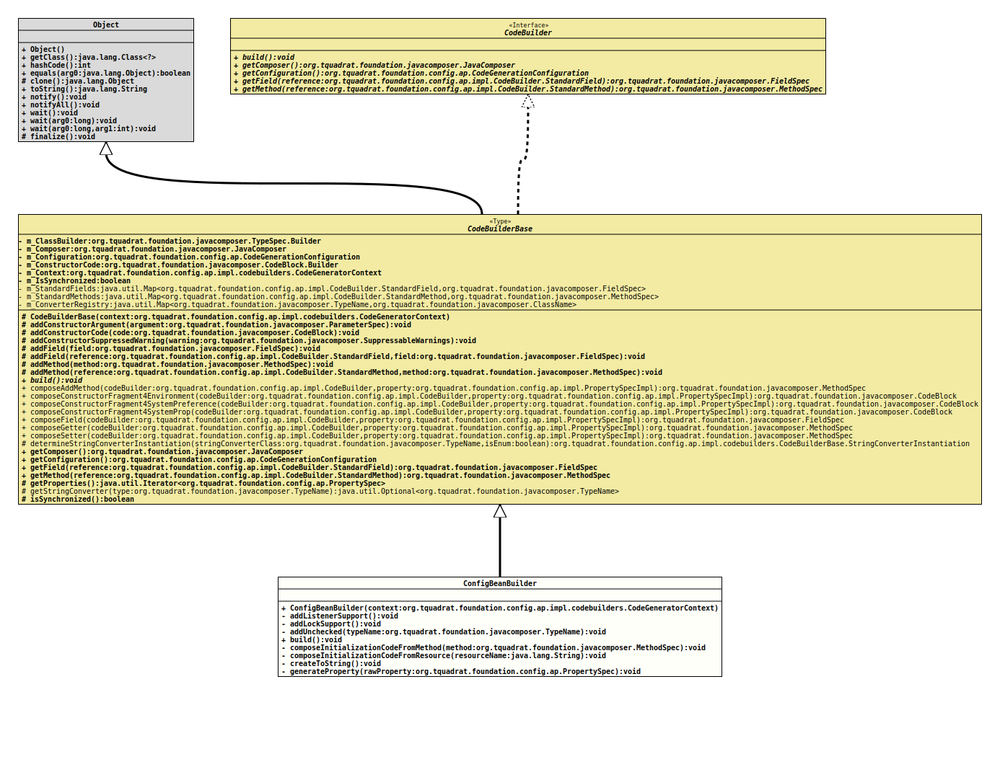

Class ConfigBeanBuilder
java.lang.Object
org.tquadrat.foundation.config.ap.impl.codebuilders.CodeBuilderBase
org.tquadrat.foundation.config.ap.impl.codebuilders.ConfigBeanBuilder
- All Implemented Interfaces:
CodeBuilder
@ClassVersion(sourceVersion="$Id: ConfigBeanBuilder.java 1076 2023-10-03 18:36:07Z tquadrat $")
@API(status=MAINTAINED,
since="0.1.0")
public final class ConfigBeanBuilder
extends CodeBuilderBase
The
code builder implementation
for the basic stuff, as defined in
ConfigBeanSpec.- Author:
- Thomas Thrien (thomas.thrien@tquadrat.org)
- Version:
- $Id: ConfigBeanBuilder.java 1076 2023-10-03 18:36:07Z tquadrat $
- Since:
- 0.1.0
- UML Diagram
-

UML Diagram for "org.tquadrat.foundation.config.ap.impl.codebuilders.ConfigBeanBuilder"
{kind=link}
-
Nested Class Summary
Nested classes/interfaces inherited from class org.tquadrat.foundation.config.ap.impl.codebuilders.CodeBuilderBase
CodeBuilderBase.StringConverterInstantiationNested classes/interfaces inherited from interface org.tquadrat.foundation.config.ap.impl.CodeBuilder
CodeBuilder.StandardField, CodeBuilder.StandardMethod -
Constructor Summary
ConstructorsConstructorDescriptionConfigBeanBuilder(CodeGeneratorContext context) Creates a new instance ofConfigBeanBuilder. -
Method Summary
Modifier and TypeMethodDescriptionprivate final voidAdds the listener support to the new class.private final voidAdds locking support to the new class.private final voidaddUnchecked(TypeName typeName) Adds "unchecked" to theSuppressWarningsannotation for the constructor if the given type is aList,Set,Mapor an otherwise parameterised type.final voidbuild()Generates the relevant code.private final voidComposes the constructor code that initialises the properties from the result of a call to theinitData()method.private final voidcomposeInitializationCodeFromResource(String resourceName) Composes the constructor code that initialises the properties from the provided resource.private final voidCreates the implementation of the methodObject.toString()for the configuration bean.private final voidgenerateProperty(PropertySpec rawProperty) Generates the methods, fields and other code for the given property.Methods inherited from class org.tquadrat.foundation.config.ap.impl.codebuilders.CodeBuilderBase
addConstructorArgument, addConstructorCode, addConstructorSuppressedWarning, addField, addField, addMethod, addMethod, composeAddMethod, composeConstructorFragment4Environment, composeConstructorFragment4SystemPreference, composeConstructorFragment4SystemProp, composeField, composeGetter, composeSetter, determineStringConverterInstantiation, getComposer, getConfiguration, getField, getMethod, getProperties, getStringConverter, isSynchronized
-
Constructor Details
-
ConfigBeanBuilder
Creates a new instance ofConfigBeanBuilder.- Parameters:
context- The code generator context.
-
-
Method Details
-
addListenerSupport
Adds the listener support to the new class. -
addLockSupport
Adds locking support to the new class. -
addUnchecked
Adds "unchecked" to theSuppressWarningsannotation for the constructor if the given type is aList,Set,Mapor an otherwise parameterised type.- Parameters:
typeName- The type to check.- See Also:
-
build
Generates the relevant code.- Specified by:
buildin interfaceCodeBuilder- Specified by:
buildin classCodeBuilderBase
-
composeInitializationCodeFromMethod
Composes the constructor code that initialises the properties from the result of a call to theinitData()method.- Parameters:
method- TheinitData()method.
-
composeInitializationCodeFromResource
Composes the constructor code that initialises the properties from the provided resource.- Parameters:
resourceName- The name of the resource.
-
createToString
Creates the implementation of the method
Object.toString()for the configuration bean. The output of that method will be like this:<ClassName> [<PropertyName> = "<PropertyValue>"[, …]] -
generateProperty
Generates the methods, fields and other code for the given property.- Parameters:
rawProperty- The property specification.
-